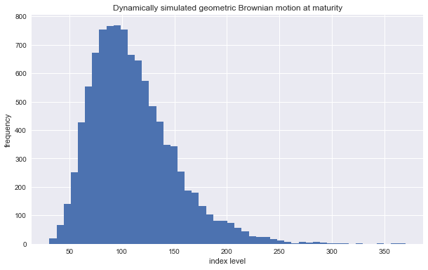
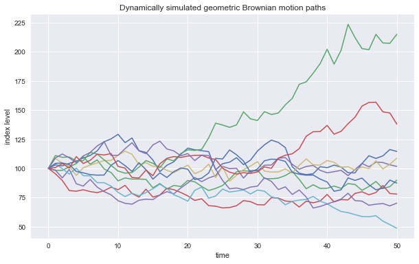
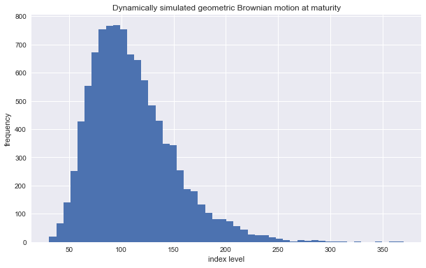
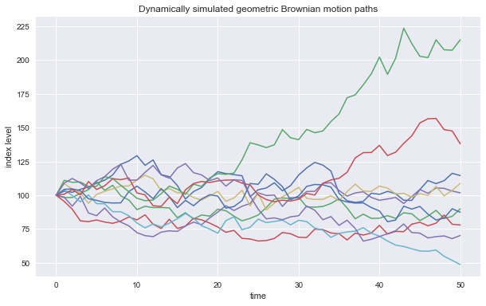

import numpy as np
np.set_printoptions(precision=4)
import numpy.random as npr
import numpy_financial as npf
import pandas as pd
import pandas_datareader as pdr
from scipy.optimize import curve_fit
import scipy.stats as scs
%matplotlib inline
from pylab import mpl, plt
import seaborn as sns
mpl.style.use('seaborn')
mpl.rcParams['figure.figsize'] = (10, 6)
import\
datetime as dt,\
json,\
math,\
requests,\
threading,\
time
import warnings
warnings.filterwarnings('ignore')
import panel as pn
pn.extension('plotly')
import plotly.express as px
import hvplot.pandas
import yfinance as yf
from dotenv import find_dotenv, get_key
import quandl
quandl.ApiConfig.api_key = get_key(find_dotenv(), 'QUANDL_API_KEY')
API_KEY = get_key(find_dotenv(), 'ALPACA_API_KEY')
API_SECRET = get_key(find_dotenv(), 'ALPACA_SECRET_KEY')
APCA_API_BASE_URL = 'https://paper-api.alpaca.markets'
import alpaca_trade_api as tradeapi
from alpaca_trade_api.rest import REST, TimeFrame
api = REST(
API_KEY,
API_SECRET,
api_version='v2',
)
Helper Functions¶
def print_statistics (a1, a2):
''' Prints selected statistics (on top of scipy.stats).
Parameters
==========
a1, a2: ndarray objects
results objects from simulation
'''
sta1 = scs.describe(a1)
sta2 = scs.describe(a2)
print('%14s %14s %14s' % ('statistic', 'data set 1', 'data set 2'))
print(45 * '-')
print('%14s %14.3f %14.3f' % ('size', sta1[0], sta2[0]))
print('%14s %14.3f %14.3f' % ('min', sta1[1][0], sta2[1][0]))
print('%14s %14.3f %14.3f' % ('max', sta1[1][1], sta2[1][1]))
print('%14s %14.3f %14.3f' % ('mean', sta1[2], sta2[2]))
print('%14s %14.3f %14.3f' % ('std', np.sqrt(sta1[3]), np.sqrt(sta2[3])))
print('%14s %14.3f %14.3f' % ('skew', sta1[4], sta2[4]))
print('%14s %14.3f %14.3f' % ('kurtosis', sta1[5], sta2[5]))
def gen_sn (M, I, anti_paths=True, mo_match=True):
''' Function to generate random numbers for simulation.
Parameters
==========
M: int
number of time intervals for discretization
I: int
number of paths to be simulated
anti_paths: boolean
use of antithetic variates
mo_match: boolean
use of moment matching
'''
if anti_paths is True:
sn = npr.standard_normal((M + 1, int(I / 2)))
sn = np.concatenate((sn, -sn), axis=1)
else:
sn = npr.standard_normal((M + 1, I))
if mo_match is True:
sn = (sn - sn.mean()) / sn.std()
return sn
12. Stochastics (Hilpisch’s Python for Finance)¶
Pseudo Random Numbers
Quasi Random Numbers based on Sobol sequences
Simulation of Random Variables
Simulation of Stochastic Processes
Valuation of derivatives with European exercise
Valuation of derivatives with American exercise
Valuation of derivatives with Bermudan exercise
Risk Analysis
VaR Value at Risk
Investopedia Part 1
Investopedia Part 2
Credit VaR
Credit valuation adjustment
(standard) normal distributions in finance are criticised, but many financial models rest directly on a (log-)normal distribution assumption; other models that don’t can be Euler-discretized and approximated for the purposes of simulation by means of the normal distribution
The Euler discretization scheme is exact for the geometric Brownian motion, but it is biased for the majority of other stochastic processes. Even if there is an exact scheme available, the use of an Euler scheme might be desirable for numerical and/or computational reasons.
MCS Monte Carlo Simulation
a numerical method for the evaluation of mathematical expressions like integrals and the valuation of financial derivatives
high computational cost: millions of computations per value estimate
Black-Scholes-Merton Model for Options Pricing¶
Static Representation¶
\(S_T\) stock index level at a future date \(T\)
\(S_0\) the level of a stock index today
\(r\) constant riskless short rate
\(\sigma\) constant volatility (standard deviation of returns) of \(S\); a major simplifying assumption is that volatility is constant
\(z\) standard normal random variable
Dynamic Representation¶
Black-Scholes-Merton SDE (geometric Brownian motion)
$\(d S_t = r S_t dt + \sigma S_t d Z_t\)\(
\)S_t\( the value of the underlying at time \)t\(; the values of \)S_t\( are log-normally distributed<br>
\)\frac{dS_t}{S_t}\( the marginal returns are normally distributed<br>
\)r\( the constant, riskless short rate<br>
\)\sigma\( the constant instantaneous volatility<br>
\)Z_t$ a standard Brownian motion
Black-Scholes-Merton difference equation (exactly-discretized Euler scheme)
$\(S_t = S_{t - \Delta t} \text{exp} \left( \left( r - \frac{\sigma^2}{2} \right) \Delta t + \sigma\sqrt{\Delta t} z \right)\)\(
\)\Delta t\( the fixed discretization interval<br>
\)z_t\( a standard normally distributed random variable<br>
for \)M\( time intervals, the length of the time interval is given as \)\Delta t \equiv \frac{T}{M}\( where \)T$ is the time horizon for the simulation
the resulting end values for the index level are log-normally distributed
# BSM Static Simulation
S0 = 100 # the initial index level
r = 0.05 # the constant riskless short rate
sigma = 0.25 # the constant volatility factor
T = 2.0 # the horizon in year fractions
I = 10_000 # the number of simulations
M = 50 # the number of time intervals for the discretization
dt = T / M # the length of the time interval in year fractions
S = np.zeros((M + 1, I)) # the 2D ndarray for the index levels
S[0] = S0 # the initial index level
# discretized simulation via vectorized expression
# normally distributed
ST1 = S0 * np.exp((r - 0.5 * sigma ** 2) * T + sigma * np.sqrt(T) * npr.standard_normal(I))
# log normally distributed
ST2 = S0 * npr.lognormal((r - 0.5 * sigma ** 2) * T, sigma * np.sqrt(T), size=I)
print_statistics(ST1, ST2)
# the statistics of both simulation results are quite similar
# the differences are primarily due to the simulation sampling error
# the discretization error, which is due to discretely simulating continuous stochastic processes,
# is not a factor here because the simulation is generated statically
plt.figure(figsize=(10, 6));
plt.hist(ST1, bins=50);
plt.xlabel('index level');
plt.ylabel('frequency');
plt.title('Statically simulated geometric Brownian motion (via npr.standard_normal())');
plt.figure(figsize=(10, 6));
plt.hist(ST2, bins=50);
plt.xlabel('index level');
plt.ylabel('frequency');
plt.title('Statically simulated geometric Brownian motion (via npr.lognormal())');
# BSM Dynamic Simulation
# the dynamic simulation allows us to
# visualize paths
# value options with American or Bermudan exercise, or options whose payoff is path-dependent
# discretized simulation via semi vectorized expression
# the loop is over the points in time starting at t = 1 and ending at t = T
for t in range(1, M + 1):
S[t] = S[t - 1] * np.exp((r - 0.5 * sigma ** 2) * dt + sigma * np.sqrt(dt) * npr.standard_normal(I))
print_statistics(S[-1], ST2)
plt.figure(figsize=(10, 6));
plt.hist(S[-1], bins=50);
plt.xlabel('index level');
plt.ylabel('frequency');
plt.title('Dynamically simulated geometric Brownian motion at maturity');
plt.figure(figsize=(10, 6));
plt.plot(S[:, :10], lw=1.5);
plt.xlabel('time');
plt.ylabel('index level');
plt.title('Dynamically simulated geometric Brownian motion paths');
statistic data set 1 data set 2
---------------------------------------------
size 10000.000 10000.000
min 20.215 24.339
max 392.058 392.235
mean 109.949 111.138
std 40.095 40.174
skew 1.119 1.090
kurtosis 2.197 2.025
statistic data set 1 data set 2
---------------------------------------------
size 10000.000 10000.000
min 31.039 24.339
max 369.806 392.235
mean 110.628 111.138
std 39.971 40.174
skew 1.083 1.090
kurtosis 1.960 2.025
 



Square-Root Diffusion¶
Cox, Ingersoll, & Ross (1985)
Mean-Reverting Process
an important class of financial processes which are used to model short rates or volatility processes, for example
Square-Root Diffusion SDE
$\(
dx_t = \kappa (\theta - x_t) dt + \sigma \sqrt{x_t} dZ_t
\)\(
\)x_t\( the process level at date t; the values of \)x_t\( are chi-squared distributed and remain strictly positive<br>
\)\kappa\( the mean-reversion factor<br>
\)\theta\( the long-term mean of the process<br>
\)\sigma\( the constant volatility factor<br>
\)Z_t$ a standard Brownian motion
Fully-Truncated Euler Discretization for Square-Root Diffusion
$\(
\begin{align}
\tilde{x}_t &= \tilde{x}_s + \kappa (\theta - \tilde{x}^+_s) \Delta t + \sigma \sqrt{\tilde{x}^+_s} \sqrt{\Delta t} z_t \\
x_t &= \tilde{x}^+_t \\
\end{align}
\)\(
\)s = t - \Delta t\(<br>
\)x^+ \equiv \text{max}(x, 0)$
correlation is easily and consistently account for since one only draws standard normally distributed random numbers
Exact Non Central Chi-Square Distribution Discretization for Square-Root Diffusion
$\(
x_t = \frac{\sigma^2 (1 - e^{- \kappa \Delta t})}{4 \kappa} \chi^{'2}_d \text{nc}
\)\(
noncentral chi-square distribution \)\chi^{‘2}_d\(<br>
degrees of freedom \)\text{df} = \frac{4 \theta \kappa}{\sigma^2}\(<br>
noncentrality parameter \)\text{nc} = \frac{4 \kappa e^{- \kappa \Delta t}}{\sigma^2 (1 - e^{- \kappa \Delta t})} x_s$
# Square-Root Diffusion simulation
x0 = 0.05 # the initial value (e.g., for a short rate)
kappa = 3.0 # the mean-reversion factor
theta = 0.02 # the long-term mean
sigma = 0.1 # the constant volatility factor
I = 250_000 # the number of path simulations
T = 2.0 # the horizon in year fractions
M = 50 # the number of time intervals for the discretization
dt = T / M # the length of the time interval in year fractions
# Euler discretization scheme via npr.standard_normal()
# negative average drift due to x0 > 0
# convergence to theta = 0.02
def srd_euler ():
xh = np.zeros((M + 1, I))
x = np.zeros_like(xh)
xh[0] = x0
x[0] = x0
for t in range(1, M + 1):
xh[t] = (xh[t - 1] +
kappa * (theta - np.maximum(xh[t - 1], 0)) * dt +
sigma * np.sqrt(np.maximum(xh[t - 1], 0)) *
np.sqrt(dt) * npr.standard_normal(I))
x = np.maximum(xh, 0)
return x
# exact discretization scheme via npr.noncentral_chisquare()
def srd_exact ():
x = np.zeros((M + 1, I))
x[0] = x0
for t in range(1, M + 1):
df = 4 * theta * kappa / sigma ** 2
c = (sigma ** 2 * (1 - np.exp(-kappa * dt))) / (4 * kappa)
nc = np.exp(-kappa * dt) / c * x[t - 1]
x[t] = c * npr.noncentral_chisquare(df, nc, size=I)
return x
%time x1 = srd_euler()
%time x2 = srd_exact()
print_statistics(x1[-1], x2[-1])
# performance: statistical properties
# the biased Euler scheme performs quite well when it comes to the desired statistical properties
# performance: computational efficiency
# sampling from the noncentral chi-square distribution is more computationally demanding
# than from the standard normal distribution
plt.figure(figsize=(10, 6));
plt.hist(x1[-1], bins=50);
plt.xlabel('value');
plt.ylabel('frequency');
plt.title('Dynamically simulated square-root diffusion at maturity (Euler scheme)');
plt.figure(figsize=(10, 6));
plt.plot(x1[:, :10], lw=1.5);
plt.xlabel('time');
plt.ylabel('index level');
plt.title('Dynamically simulated square-root diffusion paths (Euler scheme)');
plt.figure(figsize=(10, 6));
plt.hist(x2[-1], bins=50);
plt.xlabel('value');
plt.ylabel('frequency');
plt.title('Dynamically simulated square-root diffusion at maturity (exact scheme)');
plt.figure(figsize=(10, 6));
plt.plot(x2[:, :10], lw=1.5);
plt.xlabel('time');
plt.ylabel('index level');
plt.title('Dynamically simulated square-root diffusion paths (exact scheme)');
CPU times: user 540 ms, sys: 81.5 ms, total: 621 ms
Wall time: 625 ms
CPU times: user 1.11 s, sys: 13.7 ms, total: 1.13 s
Wall time: 1.13 s
statistic data set 1 data set 2
---------------------------------------------
size 250000.000 250000.000
min 0.003 0.004
max 0.059 0.060
mean 0.020 0.020
std 0.006 0.006
skew 0.556 0.585
kurtosis 0.454 0.523
Stochastic Volatility Models¶
early 1990s
Heston (1993) Stochastic Volatility SDE
$\(
\begin{align}
dS_t &= r S_t dt + \sqrt{v_t} S_t dZ^1_t \\
dv_t &= \kappa_v (\theta_v - v_t) dt + \sigma_v \sqrt{v_t} dZ^2_t \\
dZ^1_t dZ^2_t &= \rho \\
\end{align}
\)\(
\)\rho\( the instantaneous correlation between the two standard Brownian motions \)dZ^1_t\(, \)dZ^2_t$ accounts for a stylized fact called the leverage effect which states that volatility goes up in times of stress (declining markets) and goes down in times of a bull market (rising markets)
to account for the correlation between the two stochastic processes, one needs to determine the Cholesky decomposition of the correlation matrix
S0 = 100
r = 0.05
v0 = 0.1 # initial instantaneous volatility value
kappa = 3.0
theta = 0.25
sigma = 0.1
rho = 0.6 # fixed correlation between two Brownian motions
T = 1.0
M = 50
I = 10_000
dt = T / M
corr_mat = np.zeros((2, 2))
corr_mat[0, :] = [1.0, rho]
corr_mat[1, :] = [rho, 1.0]
cho_mat = np.linalg.cholesky(corr_mat) # Cholesky decomposition
# generate 3D random numbers
# use set 0 for the index process
# use set 1 for the volatility process
ran_num = npr.standard_normal((2, M + 1, I))
# volatility process simulation
# biased Euler scheme for square-root diffusion
v = np.zeros_like(ran_num[0])
vh = np.zeros_like(v)
v[0] = v0
vh[0] = v0
for t in range(1, M + 1):
# select the relevant random number subset and transform it via the Cholesky matrix
ran = np.dot(cho_mat, ran_num[:, t, :])
vh[t] = (vh[t - 1] +
kappa * (theta - np.maximum(vh[t - 1], 0)) * dt +
sigma * np.sqrt(np.maximum(vh[t - 1], 0)) *
np.sqrt(dt) * ran[1])
v = np.maximum(vh, 0)
# index level process simulation
# exact Euler scheme for geometric Brownian motion
S = np.zeros_like(ran_num[0])
S[0] = S0
for t in range(1, M + 1):
# select the relevant random number subset and transform it via the Cholesky matrix
ran = np.dot(cho_mat, ran_num[:, t, :])
S[t] = S[t - 1] * np.exp((r - 0.5 * v[t]) * dt + np.sqrt(v[t]) * ran[0] * np.sqrt(dt))
print_statistics(S[-1], v[-1])
fig, (ax1, ax2) = plt.subplots(1, 2, figsize=(10, 6))
ax1.hist(S[-1], bins=50)
ax1.set_xlabel('index level')
ax1.set_ylabel('frequency')
ax2.hist(v[-1], bins=50)
ax2.set_xlabel('volatility');
fig.suptitle('Dynamically simulated stochastic volatility process at maturity');
fig, (ax1, ax2) = plt.subplots(2, 1, sharex=True, figsize=(10, 6))
ax1.plot(S[:, :10], lw=1.5);
ax1.set_ylabel('index level');
ax2.plot(v[:, :10], lw=1.5);
ax2.set_xlabel('time');
ax2.set_ylabel('volatility');
fig.suptitle('Dynamically simulated stochastic volatility process paths');
# the volatility process is drifting positively on average and converges to theta = 0.25
statistic data set 1 data set 2
---------------------------------------------
size 10000.000 10000.000
min 20.048 0.171
max 562.190 0.335
mean 108.279 0.243
std 51.834 0.020
skew 1.702 0.138
kurtosis 5.404 0.128

Jump Diffusion¶
Merton’s 1976 Jump Diffusion Model enhances the BSM setup through a model component generating jumps with log-normal distribution
an important stylized/empirial fact is the existence of jumps in asset prices and volatility, for example
Merton Risk-Neutral Jump Diffusion SDE
$\(
dS_t = (r - r_j) S_t dt + \sigma S_t dZ_t + J_t S_t dN_t
\)\(
\)S_t\( index level at date \)t\(<br>
\)r\( constant riskless short rate<br>
\)r_j \equiv \lambda \cdot (e^{\mu_j + \delta^2 / 2} - 1)\( the drift correction for jump to maintain risk neutrality<br>
\)\sigma\( the constant volatility of \)S\(<br>
\)Z_t\( a standard Brownian motion<br>
\)J_t\( the jump at date \)t\( with distribution \)\text{log}(1 + J_t) \approx \textbf{N} \left( \text{log}(1 + \mu_j) - \frac{\delta^2}{2}, \delta^2 \right)\( with \)\textbf{N}\( as the cumulative distribution function of a standard normal random variable<br>
\)N_t\( a Poisson process with intensity \)\lambda$
Euler Discretization for Merton Risk-Neutral Jump Diffusion
$\(
S_t = S_{t - \Delta t} \left( e^{(r - r_j - \sigma^2 / 2) \Delta t + \sigma \sqrt{\Delta t} z^1_t} + (e^{\mu_j + \delta z^2_t} - 1) y_t \right)
\)\(
\)z^n_t\( are standard normally distributed<br>
\)y_t\( are Poisson distributed with intensity \)\lambda$
S0 = 100
r = 0.05
sigma = 0.2
lamb = 0.75 # the jump intensity
mu = -0.6 # the mean jump size
delta = 0.25 # the jump volatility
rj = lamb * (np.exp(mu + 0.5 * delta ** 2) - 1) # the drift correction
T = 1.0
M = 50
I = 10_000
dt = T / M
S = np.zeros((M + 1, I))
S[0] = S0
sn1 = npr.standard_normal((M + 1, I)) # standard normally distributed random numbers
sn2 = npr.standard_normal((M + 1, I)) # standard normally distributed random numbers
poi = npr.poisson(lamb * dt, (M + 1, I)) # Poisson distributed random numbers
for t in range(1, M + 1, 1):
S[t] = S[t - 1] * (np.exp((r - rj - 0.5 * sigma ** 2) * dt +
sigma * np.sqrt(dt) * sn1[t]) +
(np.exp(mu + delta * sn2[t]) - 1) *
poi[t])
S[t] = np.maximum(S[t], 0)
plt.figure(figsize=(10, 6));
plt.hist(S[-1], bins=50);
plt.xlabel('value');
plt.ylabel('frequency');
plt.title('Dynamically simulated jump diffusion process at maturity');
plt.figure(figsize=(10, 6));
plt.plot(S[:, :10], lw=1.5);
plt.xlabel('time');
plt.ylabel('index level');
plt.title('Dynamically simulated jump diffusion process paths');
Variance Reduction¶
improve the matching of the first two moments of the (standard) normal distribution
print('%15s %15s' % ('Mean', 'Std. Deviation'))
print(31 * '-')
for i in range(1, 31, 2):
npr.seed(100)
sn = npr.standard_normal(i ** 2 * 10_000)
print('%15.12f %15.12f' % (sn.mean(), sn.std()))
Mean Std. Deviation
-------------------------------
0.001150944833 1.006296354600
0.002841204001 0.995987967146
0.001998082016 0.997701714233
0.001322322067 0.997771186968
0.000592711311 0.998388962646
-0.000339730751 0.998399891450
-0.000228109010 0.998657429396
0.000295768719 0.998877333340
0.000257107789 0.999284894532
-0.000357870642 0.999456401088
-0.000528443742 0.999617831131
-0.000300171536 0.999445228838
-0.000162924037 0.999516059328
0.000135778889 0.999611052522
0.000182006048 0.999619405229
Antithetic Variates
corrects the first moment, but not the second moment
this approach draws only half the desired number of random draws and adds the same set of random numbers with the opposite sign afterward (i.e., if the random number generator draws 0.5, then another number with value -0.5 is added to the set). by construction, the mean value of such a data set must equal zero
sn = npr.standard_normal(int(10_000 / 2))
sn = np.concatenate((sn, -sn))
display(np.shape(sn), sn.mean())
print('%15s %15s' % ('Mean', 'Std. Deviation'))
print(31 * '-')
for i in range(1, 31, 2):
npr.seed(1000)
sn = npr.standard_normal(i ** 2 * int(10_000 / 2))
sn = np.concatenate((sn, -sn))
print('%15.12f %15.12f' % (sn.mean(), sn.std()))
(10000,)
2.842170943040401e-18
Mean Std. Deviation
-------------------------------
0.000000000000 1.009653753942
-0.000000000000 1.000413716783
0.000000000000 1.002925061201
-0.000000000000 1.000755212673
0.000000000000 1.001636910076
-0.000000000000 1.000726758438
-0.000000000000 1.001621265149
0.000000000000 1.001203722778
-0.000000000000 1.000556669784
-0.000000000000 1.000113464185
-0.000000000000 0.999435175324
-0.000000000000 0.999356961431
-0.000000000000 0.999641436845
-0.000000000000 0.999642768905
-0.000000000000 0.999638303451
Moment Matching
corrects both the first moment and the second moment
sn = npr.standard_normal(10_000)
display(sn.mean(), sn.std())
sn_new = (sn - sn.mean()) / sn.std()
display(sn_new.mean(), sn_new.std())
-0.001165998295162494
0.991255920204605
-2.3803181647963357e-17
0.9999999999999999
Valuation of Contingent Claims (options, derivatives, hybrid instruments)¶
in a risk-neutral world, the value of a contingent claim is the discounted expected payoff under the risk-neutral (martingale) measure
this is the probability measure that makes all risk factors (stocks, indices, etc.) drift at the riskless short rate, making the discounted processes martingales
according to the Fundamental Theory of Asset Pricing, the existence of such a probability measure is equivalent to the absence of arbitrage
Option
The right to buy (call option) or sell (put option) a specified financial instrument at a given maturity date (European option), or over a specified time period (American option), at a given price (strike price)
Payoff of European Call Option on an index at maturity
$\(
h(S_T) \equiv \text{max}(S_T - K, 0)
\)\(
\)S_T\( the index level at maturity date \)T\(<br>
\)K$ the strike price
Pricing by Risk-Neutral Expectation
given a–or in complete markets, the–risk-neutral measure for the relevant stochastic process, the price of an option is
$\(
C_0 = e^{-rT} \textbf{E}^Q_0 (h(S_T)) = e^{-rT} \int^{\infty}_0 h(s) q(s) ds
\)$
Risk-Neutral Monte Carlo Estimator for European Call Option
$\(
\begin{align}
\tilde{C_0} &= e^{-rT} \frac{1}{I} \sum_{i = 1}^I h \left( \tilde{S}^i_T \right)
& \text{where}\, \tilde{S}^i_T \,\text{is the}\, T\text{th simulated index level at maturity} \\
\end{align}
\)$
\(S_T(i)\) is the \(i\)th simulated value of the underlying at maturity \(T\) for a total number of simulated path \(I\) with \(i = 1, 2, ..., I\)
S0 = 100
r = 0.05
sigma = 0.25
T = 1.0
I = 50_000
def gbm_mcs_stat (K):
''' Valuation of European call option in Black-Scholes-Merton by Monte Carlo simulation
(of index level at maturity)
Parameters
==========
K: float
(positive) strike price of the option
Returns
=======
C0: float
estimated present value of European call option
'''
sn = gen_sn(1, I)
# simulate index level at maturity
ST = S0 * np.exp((r - 0.5 * sigma ** 2) * T + sigma * np.sqrt(T) * sn[1])
# calculate payoff at maturity
hT = np.maximum(ST - K, 0)
# calculate MCS estimator
C0 = np.exp(-r * T) * np.mean(hT)
return C0
gbm_mcs_stat(K=105)
10.044221852841922
M = 50 # the number of time intervals for the discretization
def gbm_mcs_dyna (K, option='call'):
''' Valuation of European options in Black-Scholes-Merton
by Monte Carlo simulation (of index level paths)
Parameters
==========
K: float
(positive) strike price of the option
option: string
type of the option to be valued ('call', 'put')
Returns
=======
C0: float
estimated present value of European call option
'''
dt = T / M
# simulation of index level paths
S = np.zeros((M + 1, I))
S[0] = S0
sn = gen_sn(M, I)
for t in range(1, M + 1):
S[t] = S[t - 1] * np.exp((r - 0.5 * sigma ** 2) * dt + sigma * np.sqrt(dt) * sn[t])
# case-based calculation of payoff
if option == 'call':
hT = np.maximum(S[-1] - K, 0)
else:
hT = np.maximum(K - S[-1], 0)
# calculation of MCS estimator
C0 = np.exp(-r * T) * np.mean(hT)
return C0
gbm_mcs_dyna(K=110, option='call')
7.950008525028434
gbm_mcs_dyna(K=110, option='put')
12.629934942682004
how well do these simulation-based valuation approaches perform relative to the benchmark value from the BSM valuation formula?
generate option values/estimates for a range of strike prices using the analytical option pricing formula for European calls
compare the results from the static simulation and dynamic valuation approaches with precise analytical values
all valuation differences are smaller than 1% absolutely, with both positive and negative differences
as a general rule, the quality of the Monte Carlo estimator can be controlled for by adjusting the number of time intervals M used and/or the number of paths I simulated
# Valuation of European call options in Black-Scholes-Merton model
# including Vega function and implied volatility estimation
def bsm_call_value (S0, K, T, r, sigma):
''' Valuation of European call option in BSM model.
Analytical formula.
Parameters
==========
S0: float
initial stock/index level
K: float
strike price
T: float
maturity date (in year fractions)
r: float
constant risk-free short rate
sigma: float
volatility factor in diffusion term
Returns
=======
value: float
present value of the European call option
'''
from math import log, sqrt, exp
from scipy import stats
S0 = float(S0)
d1 = (log(S0 / K) + (r + 0.5 * sigma ** 2) * T) / (sigma * sqrt(T))
d2 = (log(S0 / K) + (r - 0.5 * sigma ** 2) * T) / (sigma * sqrt(T))
# stats.norm.cdf --> cumulative distribution function for normal distribution
value = (S0 * stats.norm.cdf(d1, 0.0, 1.0) - K * exp(-r * T) * stats.norm.cdf(d2, 0.0, 1.0))
return value
def bdm_vega (S0, K, T, r, sigma):
''' Vega of European option in BSM model.
Parameters
==========
S0: float
initial stock/index level
K: float
strike price
T: float
maturity date (in year fractions)
r: float
constant risk-free short rate
sigma: float
volatility factor in diffusion term
Returns
=======
vega: float
partial derivative of BSM formula with respect to sigma, i.e. Vega
'''
from math import log, sqrt
from scipy import stats
S0 = float(S0)
d1 = (log(S0 / K) + (r + 0.5 * sigma ** 2) * T) / (sigma * sqrt(T))
vega = S0 * stats.norm.pdf(d1, 0.0, 1.0) * sqrt(T)
return vega
# implied volatility function
def bsm_call_imp_vol (S0, K, T, r, C0, sigma_est, it=100):
''' Implied volatility of European call option in BSM model.
Parameters
==========
S0: float
initial stock/index level
K: float
strike price
T: float
maturity date (in year fractions)
r: float
constant risk-free short rate
sigma_est: float
estimate of implied volatility
it: integer
number of iterations
Returns
=======
sigma_est: float
numerically estimated implied volatility
'''
for i in range(it):
sigma_est -= ((bsm_call_value(S0, K, T, r, sigma_est) - C0) / bsm_vega(S0, K, T, r, sigma_est))
return sigma_est
stat_res = []
dyna_res = []
anal_res = []
k_list = np.arange(80, 120.1, 5)
npr.seed(100)
for K in k_list:
stat_res.append(gbm_mcs_stat(K))
dyna_res.append(gbm_mcs_dyna(K))
anal_res.append(bsm_call_value(S0, K, T, r, sigma))
stat_res = np.array(stat_res)
dyna_res = np.array(dyna_res)
anal_res = np.array(anal_res)
fig, (ax1, ax2) = plt.subplots(2, 1, sharex=True, figsize=(10, 6));
ax1.plot(k_list, anal_res, 'b', label='analytical');
ax1.plot(k_list, stat_res, 'ro', label='static');
ax1.set_ylabel('European call option value');
ax1.legend(loc=0);
ax1.set_ylim(bottom=0);
wi = 1.0
ax2.bar(k_list - wi / 2, (anal_res - stat_res) / anal_res * 100, wi);
ax2.set_xlabel('strike');
ax2.set_ylabel('difference in %');
ax2.set_xlim(left=75, right=125);
fig.suptitle('Analytical option values vs. Monte Carlo estimators (static simulation)');
fig, (ax1, ax2) = plt.subplots(2, 1, sharex=True, figsize=(10, 6));
ax1.plot(k_list, anal_res, 'b', label='analytical');
ax1.plot(k_list, dyna_res, 'ro', label='dynamic');
ax1.set_ylabel('European call option value');
ax1.legend(loc=0);
ax1.set_ylim(bottom=0);
wi = 1.0
ax2.bar(k_list - wi / 2, (anal_res - dyna_res) / anal_res * 100, wi);
ax2.set_xlabel('strike');
ax2.set_ylabel('difference in %');
ax2.set_xlim(left=75, right=125);
fig.suptitle('Analytical option values vs. Monte Carlo estimators (dynamic simulation)');
Valuation of American Option via Optimal Stopping Problem
an optimal stopping problem has to be solved to come up with a fair value of the option
$\(
V_0 = \underset{r \in \{0, \Delta t, 2 \Delta t, ..., T\}}{\text{sup}} e^{-rT} \textbf{E}^Q_0 (h_{\tau}(S_{\tau}))
\)$
LSM Least-Squares Monte Carlo
Longstaff & Schwartz (2001)
the value of an American/Bermudan option at any given date \(t\) is given as
$\(
V_t(s) = \text{max}(h_t (s), C_t (s))
\)\(
where \)C_t (s) = \textbf{E}^Q_t (e^{-r \Delta t} V_{t + \Delta t} (S_{t + \Delta t} | S_t = s)\( is the continuation value of the option given an index level of \)S_t = s$
def gbm_mcs_amer (K, option='call'):
''' Valuation of American option in Black-Scholes-Merton
by Monte Carlo simulation by LSM algorithm
Parameters
==========
K: float
(positive) strike price of the option
option: string
type of the option to be valued ('call', 'put')
Returns
=======
C0: float
estimated present value of American call option
'''
dt = T / M
df = np.exp(-r * dt)
# simulation of index levels
S = np.zeros((M + 1, I))
S[0] = S0
sn = gen_sn(M, I)
for t in range(1, M + 1):
S[t] = S[t - 1] * np.exp((r - 0.5 * sigma ** 2) * dt + sigma * np.sqrt(dt) * sn[t])
# case based calculation of payoff
if option == 'call':
h = np.maximum(S - K, 0)
else:
h = np.maximum(K - S, 0)
# LSM algorithm
V = np.copy(h)
for t in range(M - 1, 0, -1):
reg = np.polyfit(S[t], V[t + 1] * df, 7)
C = np.polyval(reg, S[t])
V[t] = np.where(C > h[t], V[t + 1] * df, h[t])
# MCS estimator
C0 = df * np.mean(V[1])
return C0
gbm_mcs_amer(110, option='call')
7.721705606305353
gbm_mcs_amer(110, option='put')
13.609997625418051
euro_res = []
amer_res = []
k_list = np.arange(80, 120.1, 5)
for K in k_list:
euro_res.append(gbm_mcs_dyna(K, 'put'))
amer_res.append(gbm_mcs_amer(K, 'put'))
euro_res = np.array(euro_res)
amer_res = np.array(amer_res)
fig, (ax1, ax2) = plt.subplots(2, 1, sharex=True, figsize=(10, 6))
ax1.plot(k_list, euro_res, 'b', label='European put')
ax1.plot(k_list, amer_res, 'ro', label='American put')
ax1.set_ylabel('call option value')
ax1.legend(loc=0)
wi = 1.0
ax2.bar(k_list - wi / 2, (amer_res - euro_res) / euro_res * 100, wi)
ax2.set_xlabel('strike')
ax2.set_ylabel('early exercise premium in %')
ax2.set_xlim(left=75, right=125);
VaR Value at Risk
limited ability to capture tail risk
a number denoted in currency units (e.g., USD, EUR, JPY) indicating a loss (of a portfolio, a single position, etc.) that is not exceeded with some confidence level (probability) over a given period of time
S0 = 100
r = 0.05
sigma = 0.25
T = 30 / 365
I = 10_000
# simulate end of period values for the geometric Brownian motion
ST = S0 * np.exp((r - 0.5 * sigma ** 2) * T + sigma * np.sqrt(T) * npr.standard_normal(I))
# calculate the absolute profits and losses per simulation run and sort the values
R_gbm = np.sort(ST - S0)
plt.figure(figsize=(10, 6));
plt.hist(R_gbm, bins=50);
plt.xlabel('absolute return');
plt.ylabel('frequency');
plt.title('Absolute profits and losses from simulation (geometric Brownian motion)');
Stochastic Processes¶
Stochastic Process
a sequence of random variables
similar to a sequence of repeated simulations of a random variable, but draws are typically not independent but rather depend on the result(s) of the previous draw(s)
Markov Property
“tomorrow’s value of the simulated process only depends on today’s state of the process, and not any other more “historic” state or even the whole path history”
the process is called memoryless
Probability Distirbution Functions¶
Beta Distribution
npr.beta(a, b[, size]) over [0, 1]
Binomial Distribution
npr.binomial(n, p[, size])
Chi Squared Distribution
npr.chisquare(df[, size])
Dirichlet Distribution
npr.dirichlet(alpha[, size])
Exponential Distribution
npr.exponential([scale, size])
F Distribution
npr.f(dfnum, dfden[, size])
Gamma Distribution
npr.gamma(shape[, scale, size])
Geometric Distribution
npr.geometric(p[, size])
Gumbel Distribution
npr.gumbel([loc, scale, size])
Hypergeometric Distribution
npr.hypergeometric(ngood, nbad, nsample[, size])
Laplace/Double-Exponential Distribution
npr.laplace([loc, scale, size])
Logistic Distribution
npr.logistic([loc, scale, size])
Log Normal Distribution
npr.lognormal([mean, sigma, size])
Logarithmic Series Distribution
npr.logseries(p[, size])
Multinomial Distribution
npr.multinomial(n, pvals[, size])
Multivariate Normal Distribution
npr.multivariate_normal(mean, cov[, size])
Negative Binomial Distribution
npr.negative_binoomial(n, p[, size])
Non Central Chi Squared Distribution
npr.noncentral_chisquare(df, nonc[, size])
Non Central F Distribution
npr.noncentral_f(dfnum, dfden, nonc[, size])
Normal/Gaussian Distribution
npr.normal([loc, scale, size])
Pareto II / Lomax Distribution
npr.pareto(a[, size])
Poisson Distribution
npr.poisson([lam, size])
Power Distribution
npr.power(a[, size]) in [0, 1] with positive exponent a - 1
Rayleigh Distribution
npr.rayleigh([scale, size])
Standard Cauchy Distribution
npr.standard_cauchy([size]) with mode = 0
Standard Exponential Distribution
npr.standard_exponential([size])
Standard Gamma Distribution
npr.standard_gamma(shape[, size])
Standard Normal Distribution
npr.standard_normal([size]) with mean = 0, stdev = 1
Student’s t Distribution
npr.standard_t(df[, size]) with df degrees of freedom
Triangular Distribution
npr.triangular(left, mode, right[, size]) over the interval [left, right]
Uniform Distribution
npr.uniform([low, high, size])
uniform random numbers in the interval [a, b) with shape
npr.rand(shape) * (b - a) + a
standard normal distribution
npr.randn(shape)
discrete uniform distribution
npr.randint(low_inclusive, high_exclusive, shape)
npr.random_integers(low_inclusive, high_inclusive, shape)
continuous uniform distribution [0, 1)
npr.random_sample(shape)
npr.random(shape)
npr.ranf(shape)
npr.sample(shape)
uniform or nonuniform
npr.choice(list, shape, probabilities)
Von Mises Distribution
npr.vonmises(mu, kappa[, size])
Wald / Inverse Gaussian Distribution
npr.wald(mean, scale[, size])
Weibull Distribution
npr.weibull(a[, size])
Zipf Distribution
npr.zipf(a[, size])
# visualizing NumPy distribution functions
sample_size = 500
rn1 = npr.rand(sample_size, 3)
rn2 = npr.randint(0, 10, sample_size)
rn3 = npr.sample(sample_size)
rn4 = npr.choice([0, 25, 50, 75, 100], sample_size)
rn5 = npr.standard_normal(sample_size) # mean = 0, std = 1
rn6 = npr.normal(100, 20, sample_size) # mean = 100, std = 20
rn7 = npr.chisquare(df=0.5, size=sample_size) # 0.5 degrees of freedom
rn8 = npr.poisson(lam=1.0, size=sample_size)
fig, ((ax1, ax2), (ax3, ax4), (ax5, ax6), (ax7, ax8)) = plt.subplots(nrows=4, ncols=2, figsize=(10, 16))
ax1.hist(rn1, bins=25, stacked=True);
ax1.set_title('rand');
ax1.set_ylabel('frequency');
ax2.hist(rn2, bins=25);
ax2.set_title('randint');
ax3.hist(rn3, bins=25);
ax3.set_title('sample');
ax3.set_ylabel('frequency');
ax4.hist(rn4, bins=25)
ax4.set_title('choice');
ax5.hist(rn5, bins=25);
ax5.set_title('standard normal');
ax5.set_ylabel('frequency');
ax6.hist(rn6, bins=25);
ax6.set_title('normal(100, 20)');
ax7.hist(rn7, bins=25);
ax7.set_title('chi square');
ax7.set_ylabel('frequency');
ax8.hist(rn8, bins=25);
ax8.set_title('Poisson');
sample_size = 500
rn1 = npr.standard_normal(sample_size)
rn2 = npr.lognormal(size=sample_size)
rn3 = np.log(rn2)
fig, ((ax1, ax2, ax3)) = plt.subplots(nrows=1, ncols=3, figsize=(15, 4))
ax1.hist(rn1, bins=50);
ax1.set_title('Standard Normal');
ax1.set_ylabel('frequency');
ax1.axvline(np.median(rn1), color='g', linewidth=0.5, label='mean');
ax1.axvline(rn1.mean(), color='r', linewidth=0.5, label='mean');
ax1.legend();
ax2.hist(rn2, bins=50);
ax2.set_title('Log Normal');
ax2.axvline(np.median(rn2), color='g', linewidth=0.5, label='mean');
ax2.axvline(rn2.mean(), color='r', linewidth=0.5, label='mean');
ax2.legend();
ax3.hist(rn3, bins=50);
ax3.set_title('Normalized Log Normal');
ax3.axvline(np.median(rn3), color='g', linewidth=0.5, label='mean');
ax3.axvline(rn3.mean(), color='r', linewidth=0.5, label='mean');
ax3.legend();
Python for Algorithmic Trading¶
%%time
import random
from math import exp, sqrt
S0 = 100
r = 0.05
T = 1.0
sigma = 0.2
values = []
for _ in range(1_000_000):
ST = S0 * exp((r - 0.5 * sigma ** 2) * T + sigma * random.gauss(0, 1) * sqrt(T))
values.append(ST)
CPU times: user 1.1 s, sys: 39.7 ms, total: 1.14 s
Wall time: 1.16 s
%%time
import numpy as np
S0 = 100
r = 0.05
T = 1.0
sigma = 0.2
ST = S0 * np.exp((r - 0.5 * sigma ** 2) * T + sigma * np.random.standard_normal(1_000_000) * np.sqrt(T))
CPU times: user 42.7 ms, sys: 6.85 ms, total: 49.6 ms
Wall time: 49 ms
%matplotlib inline
from pylab import mpl, plt
plt.style.use('seaborn')
mpl.rcParams['savefig.dpi'] = 300
mpl.rcParams['font.family'] = 'serif'
import configparser
c = configparser.ConfigParser()